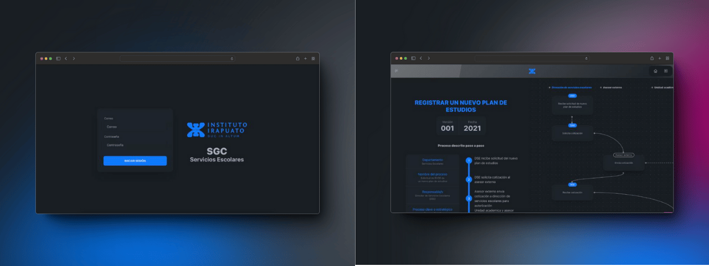
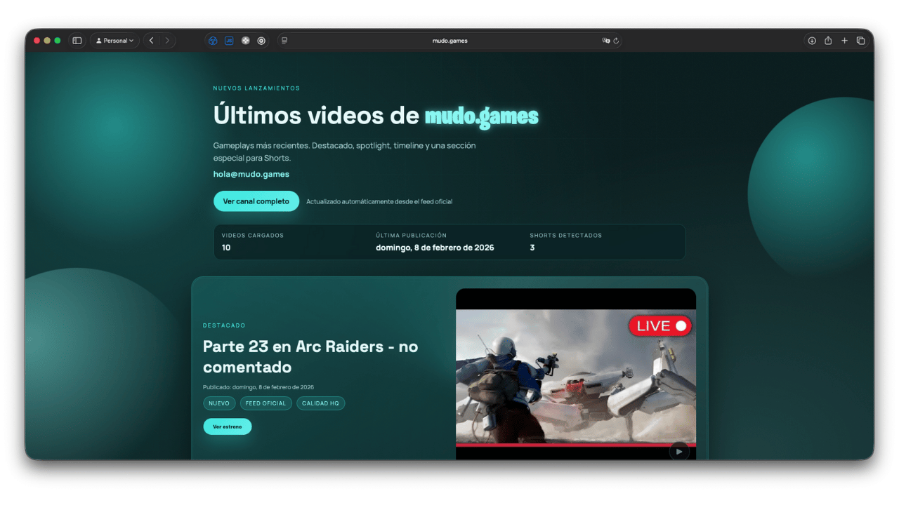
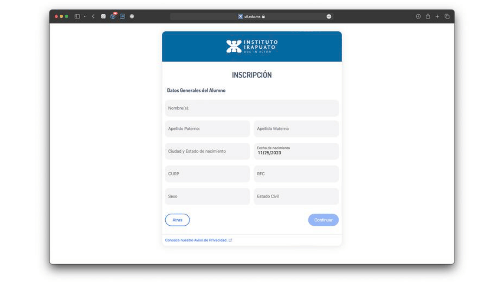
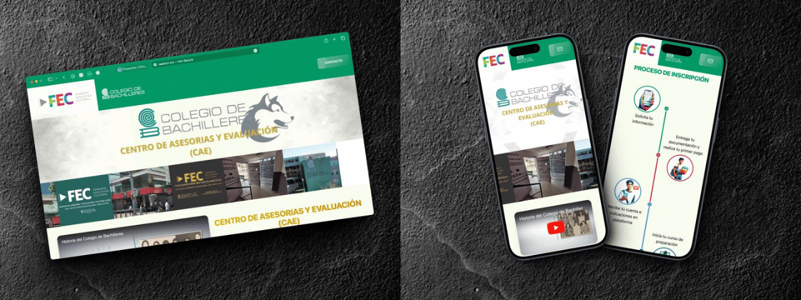

Fortnite Sprites Tracker
Tracker interactivo de coleccionables con generador de plantillas PNG en el navegador, guardado local y soporte multilenguaje.
Ingeniero en sistemas enfocado en la creación de utilidades interactivas y resolución de problemas técnicos.
Construyo herramientas a medida y ecosistemas web rápidos utilizando React y Astro, priorizando la automatización de procesos y la eficiencia del usuario final.
Aplicaciones web, herramientas en el navegador, visualización de datos y plataformas internas que he diseñado y construido.
Tracker interactivo de coleccionables con generador de plantillas PNG en el navegador, guardado local y soporte multilenguaje.
Transcriptor de audio a texto que ejecuta modelos de inteligencia artificial 100% en el navegador sin enviar datos a servidores.

Mapeador nativo de ratón y teclado a DualSense virtual para PS Remote Play en Apple Silicon a 125 Hz con anti-deadzone y SwiftUI.
Visualizador y simulador de rutas de transporte público creado a partir de datos geoespaciales procesados con Python.
Plataforma de análisis geoespacial que procesa y visualiza más de 39,000 registros públicos de forma accesible.
Comparador visual para evaluar y elegir miniaturas de video antes de su publicación.

Sistema interno para agilizar y organizar la gestión de calidad en servicios escolares.

Plataforma multimedia que se actualiza y despliega sola mediante feeds RSS e integración continua.

Automatización documental y generación de contratos PDF en el navegador para admisiones escolares.

Sitio institucional estático diseñado para ofrecer carga rápida, lectura clara y accesibilidad móvil.
Renovación del portal educativo institucional con mejor estructura de información y rendimiento móvil.
Formación en desarrollo de software, bases de datos relacionales y no relacionales, arquitectura en la nube y procesamiento de datos para la toma de decisiones.
Selección de los cursos y diplomas más recientes enfocados en automatización, backend, datos y despliegue.

Tecnologías con las que trabajo día a día para diseñar, programar y automatizar soluciones.
Estoy disponible para colaborar en proyectos web, automatización de procesos o integrarme a equipos de desarrollo en modalidad remota o híbrida.